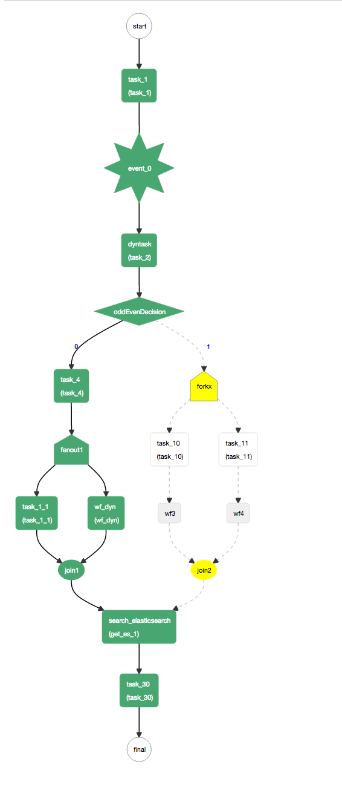

Kitchen Sink
An example kitchensink workflow that demonstrates the usage of all the schema constructs.
Definition
{
"name": "kitchensink",
"description": "kitchensink workflow",
"version": 1,
"tasks": [
{
"name": "task_1",
"taskReferenceName": "task_1",
"inputParameters": {
"mod": "${workflow.input.mod}",
"oddEven": "${workflow.input.oddEven}"
},
"type": "SIMPLE"
},
{
"name": "event_task",
"taskReferenceName": "event_0",
"inputParameters": {
"mod": "${workflow.input.mod}",
"oddEven": "${workflow.input.oddEven}"
},
"type": "EVENT",
"sink": "conductor"
},
{
"name": "dyntask",
"taskReferenceName": "task_2",
"inputParameters": {
"taskToExecute": "${workflow.input.task2Name}"
},
"type": "DYNAMIC",
"dynamicTaskNameParam": "taskToExecute"
},
{
"name": "oddEvenDecision",
"taskReferenceName": "oddEvenDecision",
"inputParameters": {
"oddEven": "${task_2.output.oddEven}"
},
"type": "DECISION",
"caseValueParam": "oddEven",
"decisionCases": {
"0": [
{
"name": "task_4",
"taskReferenceName": "task_4",
"inputParameters": {
"mod": "${task_2.output.mod}",
"oddEven": "${task_2.output.oddEven}"
},
"type": "SIMPLE"
},
{
"name": "dynamic_fanout",
"taskReferenceName": "fanout1",
"inputParameters": {
"dynamicTasks": "${task_4.output.dynamicTasks}",
"input": "${task_4.output.inputs}"
},
"type": "FORK_JOIN_DYNAMIC",
"dynamicForkTasksParam": "dynamicTasks",
"dynamicForkTasksInputParamName": "input"
},
{
"name": "dynamic_join",
"taskReferenceName": "join1",
"type": "JOIN"
}
],
"1": [
{
"name": "fork_join",
"taskReferenceName": "forkx",
"type": "FORK_JOIN",
"forkTasks": [
[
{
"name": "task_10",
"taskReferenceName": "task_10",
"type": "SIMPLE"
},
{
"name": "sub_workflow_x",
"taskReferenceName": "wf3",
"inputParameters": {
"mod": "${task_1.output.mod}",
"oddEven": "${task_1.output.oddEven}"
},
"type": "SUB_WORKFLOW",
"subWorkflowParam": {
"name": "sub_flow_1",
"version": 1
}
}
],
[
{
"name": "task_11",
"taskReferenceName": "task_11",
"type": "SIMPLE"
},
{
"name": "sub_workflow_x",
"taskReferenceName": "wf4",
"inputParameters": {
"mod": "${task_1.output.mod}",
"oddEven": "${task_1.output.oddEven}"
},
"type": "SUB_WORKFLOW",
"subWorkflowParam": {
"name": "sub_flow_1",
"version": 1
}
}
]
]
},
{
"name": "join",
"taskReferenceName": "join2",
"type": "JOIN",
"joinOn": [
"wf3",
"wf4"
]
}
]
}
},
{
"name": "search_elasticsearch",
"taskReferenceName": "get_es_1",
"inputParameters": {
"http_request": {
"uri": "http://localhost:9200/conductor/_search?size=10",
"method": "GET"
}
},
"type": "HTTP"
},
{
"name": "task_30",
"taskReferenceName": "task_30",
"inputParameters": {
"statuses": "${get_es_1.output..status}",
"workflowIds": "${get_es_1.output..workflowId}"
},
"type": "SIMPLE"
}
],
"outputParameters": {
"statues": "${get_es_1.output..status}",
"workflowIds": "${get_es_1.output..workflowId}"
},
"ownerEmail": "example@email.com",
"schemaVersion": 2
}
Visual Flow

Running Kitchensink Workflow
- If you are running Conductor locally, use the
-DloadSample=trueJava system property when launching the server. This will create a kitchensink workflow, related task definitions and kick off an instance of kitchensink workflow. Otherwise, you can create a new Workflow Definition in the UI by copying the sample above. - Once the workflow has started, the first task remains in the
SCHEDULEDstate. This is because no workers are currently polling for the task. - We will use the REST endpoints directly to poll for tasks and updating the status.
Start workflow execution
Start the execution of the kitchensink workflow by posting the following:
curl -X POST --header 'Content-Type: application/json' --header 'Accept: text/plain' '{{ server_host }}{{ api_prefix }}/workflow/kitchensink' -d '
{
"task2Name": "task_5"
}
'
Poll for the first task:
The response should look something like:
{
"taskType": "task_1",
"status": "IN_PROGRESS",
"inputData": {
"mod": null,
"oddEven": null
},
"referenceTaskName": "task_1",
"retryCount": 0,
"seq": 1,
"pollCount": 1,
"taskDefName": "task_1",
"scheduledTime": 1486580932471,
"startTime": 1486580933869,
"endTime": 0,
"updateTime": 1486580933902,
"startDelayInSeconds": 0,
"retried": false,
"callbackFromWorker": true,
"responseTimeoutSeconds": 3600,
"workflowInstanceId": "b0d1a935-3d74-46fd-92b2-0ca1e388659f",
"taskId": "b9eea7dd-3fbd-46b9-a9ff-b00279459476",
"callbackAfterSeconds": 0,
"polledTime": 1486580933902,
"queueWaitTime": 1398
}
Update the task status
- Note the values for
taskIdandworkflowInstanceIdfields from the poll response - Update the status of the task as
COMPLETEDas below:
curl -H 'Content-Type:application/json' -H 'Accept:application/json' -X POST {{ server_host }}{{ api_prefix }}/tasks/ -d '
{
"taskId": "b9eea7dd-3fbd-46b9-a9ff-b00279459476",
"workflowInstanceId": "b0d1a935-3d74-46fd-92b2-0ca1e388659f",
"status": "COMPLETED",
"outputData": {
"mod": 5,
"taskToExecute": "task_1",
"oddEven": 0,
"dynamicTasks": [
{
"name": "task_1",
"taskReferenceName": "task_1_1",
"type": "SIMPLE"
},
{
"name": "sub_workflow_4",
"taskReferenceName": "wf_dyn",
"type": "SUB_WORKFLOW",
"subWorkflowParam": {
"name": "sub_flow_1"
}
}
],
"inputs": {
"task_1_1": {},
"wf_dyn": {}
}
}
}'
This will mark the task_1 as completed and schedule task_5 as the next task.
Repeat the same process for the subsequently scheduled tasks until the completion.